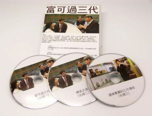

<?xml version="1.0" encoding="UTF-8"?><rss version="2.0"
	xmlns:content="http://purl.org/rss/1.0/modules/content/"
	xmlns:wfw="http://wellformedweb.org/CommentAPI/"
	xmlns:dc="http://purl.org/dc/elements/1.1/"
	xmlns:atom="http://www.w3.org/2005/Atom"
	xmlns:sy="http://purl.org/rss/1.0/modules/syndication/"
	xmlns:slash="http://purl.org/rss/1.0/modules/slash/"
	>

<channel>
	<title>新闻中心 &#8211; 訊通展覽公司</title>
	<atom:link href="" rel="self" type="application/rss+xml" />
	<link>https://www.paper-com.com.hk/cn</link>
	<description>Paper Communication Exhibition Services</description>
	<lastBuildDate>Fri, 07 Oct 2022 10:13:19 +0000</lastBuildDate>
	<language>zh-Hans</language>
	<sy:updatePeriod>
	hourly	</sy:updatePeriod>
	<sy:updateFrequency>
	1	</sy:updateFrequency>
	<generator>https://wordpress.org/?v=6.8.1</generator>

<image>
	<url>https://www.paper-com.com.hk/wp-content/uploads/2019/02/cropped-papercom-32x32.png</url>
	<title>新闻中心 &#8211; 訊通展覽公司</title>
	<link>https://www.paper-com.com.hk/cn</link>
	<width>32</width>
	<height>32</height>
</image> 
	<item>
		<title>画册订购︰沙漠清泉 – 香港杰出艺术家作品集</title>
		<link>https://www.paper-com.com.hk/cn/blog/awakening-desert/</link>
		
		<dc:creator><![CDATA[papercom]]></dc:creator>
		<pubDate>Thu, 06 Oct 2022 10:32:43 +0000</pubDate>
				<category><![CDATA[新闻中心]]></category>
		<guid isPermaLink="false">https://www.paper-com.com.hk/?p=7731</guid>

					<description><![CDATA[　 订购手续： 售价：每册港币398元。 详情请联系： 讯通展览公司 香港九龙官]]></description>
										<content:encoded><![CDATA[<p><br />
　</p>
<h3>订购手续：</h3>
<p>售价：每册港币398元。<br />
详情请联系：<br />
讯通展览公司<br />
香港九龙官塘成业街11号华成工商中心5楼15室<br />
电话：13761470961<br />
传真：852-23410379<br />
电邮：<a href="mailto:info@beltnroadculture.com">info@beltnroadculture.com</a><br />
　<br />
　<br />
<a href="https://www.beltnroadculture.com/wp-content/uploads/2022/09/BnR2022-BOOK-Form-scaled.jpg" target="_blank" style="font-size: 21px;" class="btn" rel="noopener"><strong>　下载表格　</strong></a></p>
]]></content:encoded>
					
		
		
			</item>
		<item>
		<title>产品订购︰华人家族企业传承一富可过三代</title>
		<link>https://www.paper-com.com.hk/cn/blog/family-owned-business-succession/</link>
		
		<dc:creator><![CDATA[papercom]]></dc:creator>
		<pubDate>Fri, 18 Jul 2014 02:20:18 +0000</pubDate>
				<category><![CDATA[新闻中心]]></category>
		<guid isPermaLink="false">http://papercom.ddns.net/?p=118</guid>

					<description><![CDATA[在华人社会中，“白手兴家”是令人羡慕、很多人心目中的奋斗目标；与此同时，但亦不少人认同“创业难，守业更难”的定论，而要“富过三代”更被视为难比登天！很多成功家族企业都面对着同样的企业承传问题，要令企业成功传承的确是一门棘手课题和高深的学问。]]></description>
										<content:encoded><![CDATA[<p><strong><span style="color: #339966; font-size: 24px;">简介</span></strong><br />
在华人社会中，“白手兴家”是令人羡慕、很多人心目中的奋斗目标；与此同时，但亦不少人认同“创业难，守业更难”的定论，而要“富过三代”更被视为难比登天！很多成功家族企业都面对着同样的企业承传问题，要令企业成功传承的确是一门棘手课题和高深的学问，这一套三张的标清光碟会跟大家深入浅出地解构这门学问。<br />
Video 1 详细讲解香港大学、城市大学教授及国际专业顾问悉心研究、分析和总结的成果。 (29分钟)<br />
Video 2 几位教授和专家将会探讨企业能够成功传承的因素和分享宝贵的意见。 (46分钟)<br />
Video 3 由成功地传承家族企业的企业负责人，分享如何打破“富不过三代”的魔咒，将祖上的生意传下来，以至发扬光大的经验和心得。 (40分钟)<br />
&nbsp;<br />
<strong><span style="color: #339966; font-size: 24px;">目的</span></strong><br />
提高社会对企业传承这个问题的关注和经验分享，帮助企业更完善地处理交班和接班的问题，增强企业之间的交流，致力协助企业解决现存及潜在的问题。<br />
&nbsp;<br />
<span style="color: #339966; font-size: 24px;"><strong>研究员</strong></span></p>
<ol>
<li>香港大学科技支援中心主任(退休) 李达义博士<br />李达义博士在澳洲昆士兰大学取得博士学位，是英国工程学会的特许工程师和香港董事学会的资深会员。李博士于1989年开始任职香港大学科技支援中心主任，专注研究管理系统，并于2008年退休。近年他研究企业管理，在结合中国传统价值观和企业传承方面特别有心得。 </li>
<li>臻煌有限公司(执行董事及资深顾问) Leslie李贤胜先生<br />Leslie 李贤胜先生是国际专业发展联盟(IuPDI)主席及英国特许质量协会(CQI)香港分会荣誉主席。他从1990年开始为客户提供企业管理顾问服务。 </li>
<li>香港城市大学系统工程与工程管理学系钱桂生教授<br />钱桂生博士是国际质量学院副院士及美国品质学会院士,拥有超过二十年的管理工作经验。曾发布超过120关于品质管理与工程管理的国际性学术杂志文章。</li>
</ol>
<p>&nbsp;<br />
<strong><span style="color: #339966; font-size: 24px;">产 品 订 购</span></strong><br />
售价︰一套三张光碟为港币六百六十八元正<br />
&nbsp;<br />
出版：国际专业发展联盟有限公司<br />
网址：<a href="http://www.IuPDI.org" target="_blank" rel="noopener">www.IuPDI.org</a><br />
&nbsp;<br />
代理：讯通出版有限公司<br />
香港九龙官塘成业街 11 号 华成工商中心 5 字楼 15 室<br />
电话：13761470961（郭先生）<br />
传真：852-2341 0379<br />
电邮：<a href="/xt">1301150027@qq.com</a></p>
]]></content:encoded>
					
		
		
			</item>
	</channel>
</rss>
